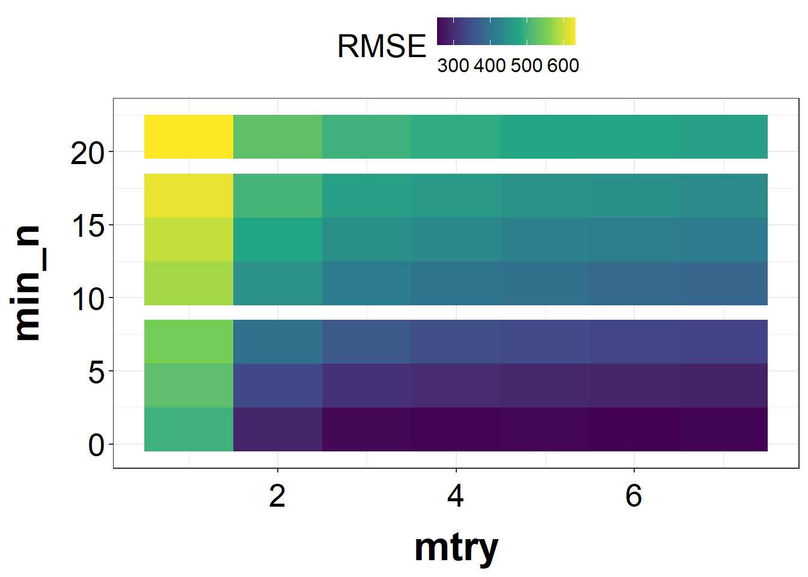

Loading required package: Matrix
Attaching package: 'Matrix'
The following objects are masked from 'package:tidyr':
expand, pack, unpack
Loaded glmnet 4.1-4
Warning: Removed 1 row containing missing values or values outside the scale range
(`geom_point()`).
For LASSO regression, we have RMSE=581, which is very similar to linear regression. This is because the predictors have a low correlation, and LASSO regression does not have to fix the collinearity problem. That being said, the linear regression model and LASSO regression should have similar results as each predictor has some unique predictability.
Next, I will fit a random forest model.
# Set a seedrngseed <-1234# RF: Y ~ all predictorsrf_model <-rand_forest() %>%set_engine("ranger", seed=rngseed) %>%set_mode("regression")rf_wf <-workflow() %>%add_model(rf_model) %>%add_recipe(rcp)model3 <- rf_wf %>%fit(data=data)# Print RMSEresults3 <-predict(model3, data) %>%bind_cols(data) %>%metrics(truth=Y, estimate=.pred) %>%print()
# A tibble: 3 × 3
.metric .estimator .estimate
<chr> <chr> <dbl>
1 rmse standard 362.
2 rsq standard 0.901
3 mae standard 282.
Warning: Removed 1 row containing missing values or values outside the scale range
(`geom_point()`).
For random forest, we have RMSE=362, which is the lowest amont all three models. However, this is likely due to overfitting.
Tuning the models
First, I want to tune the penalty parameter in LASSO regression.
# Define parameter setls_grid <-tibble(penalty=10^seq(-5, 2, length.out=50))# Workflow to tune the parameterls_tune <-linear_reg(penalty=tune()) %>%set_engine("glmnet")ls_wf <-workflow() %>%add_model(ls_tune) %>%add_recipe(rcp)ls_tune_result <- ls_wf %>%tune_grid(resamples=apparent(data), grid=ls_grid, metrics=metric_set(yardstick::rmse))# Make a plot of tuning resultsls_tune_result_df <-as.data.frame(ls_tune_result$.metrics)ggplot(ls_tune_result_df, aes(x=penalty, y=.estimate))+geom_line(linewidth=1, color="darkred")+scale_x_log10()+labs(x="Log penalty parameter", y="RMSE")+theme_bw()+theme(axis.title.x=element_text(size=25,color="black",margin=margin(t=15),face="bold"),axis.title.y=element_text(size=25,color="black",margin=margin(r=15),face="bold"),axis.text.x=element_text(color="black",size=20,vjust=0),axis.text.y=element_text(color="black",size=20,hjust=1), legend.position="top",legend.title=element_text(size=20), legend.text=element_text(size=18,vjust=0))
As shown, RMSE increases as the penalty parameter increases. The penalty parameter in LASSO regression is used to adjust the penalty of including too many predictors on the loss function. When the penalty parameter is small, the loss function is extremely close to the loss function in linear regression. That’s why the RMSE is similar to linear regression when the penalty parameter is small.
On the other hand, as the penalty parameter increases, the loss function of LASSO regression becomes more and more different from the one of linear regression. With greater penalty, the RMSE increases.
Now let’s tune the parameters for the random forest model.
# Define parameter setrf_grid <-grid_regular(mtry(range=c(1, 7)),min_n(range=c(1, 21)),levels=7)# Workflow to tune the parameterrf_model <-rand_forest(mtry=tune(), min_n=tune(), trees=300) %>%set_engine("ranger", seed=rngseed) %>%set_mode("regression")rf_wf <-workflow() %>%add_model(rf_model) %>%add_recipe(rcp)rf_tune_result <- rf_wf %>%tune_grid(resamples=apparent(data), grid=rf_grid, metrics=metric_set(yardstick::rmse))# Make a plot of tuning resultsrf_tune_result_df <-as.data.frame(rf_tune_result$.metrics)ggplot(rf_tune_result_df, aes(x=mtry, y=min_n, fill=.estimate))+geom_tile()+scale_fill_viridis_c(name="RMSE") +labs(x="mtry", y="min_n") +theme_bw()+theme(axis.title.x=element_text(size=25,color="black",margin=margin(t=15),face="bold"),axis.title.y=element_text(size=25,color="black",margin=margin(r=15),face="bold"),axis.text.x=element_text(color="black",size=20,vjust=0),axis.text.y=element_text(color="black",size=20,hjust=1), legend.position="top",legend.title=element_text(size=20), legend.text=element_text(size=12,vjust=0))

According to the output above, higher mtry and lower min_n lead to lower RMSE.
Tuning with CV
Now I’m using CV to tune the parameters. Let’s start with LASSO regression.
# 5-fold CVdata_cv <-vfold_cv(data, v=5, repeats=5)# Workflow to tune the parameterls_tune_result_cv <- ls_wf %>%tune_grid(resamples=data_cv, grid=ls_grid, metrics=metric_set(yardstick::rmse))# Make a plot of tuning resultsautoplot(ls_tune_result_cv)
As shown, the RMSE increases as the penalty parameter increases. This is a similar pattern as we observed above.
Then, let’s repeat the steps for random forest.
# Workflow to tune the parameterrf_tune_result_cv <- rf_wf %>%tune_grid(resamples=data_cv, grid=rf_grid, metrics=metric_set(yardstick::rmse))# Make a plot of tuning resultsautoplot(rf_tune_result_cv)